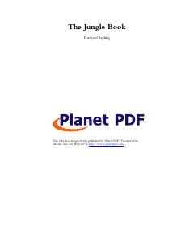

TJHind o'rmonlarida bo'rilar orasida ulg'aygan Mavli ismli bolaning sarguzashtlari.
Ushbu asar hind o'rmonlarida bo'ri suruvida voyaga yetgan Mavli ismli bola va uning o'rmon hayvonlari orasidagi sarguzashtlari haqida hikoya qiladi. Kitob tabiat qonunlari, do'stlik va jasorat mavzularini ochib beradi.